Themes
Every theme restyles the whole app: colours, illustrated artwork, the font of page titles, the loading screen and the in-game HUD. These are real screenshots of Moony in each one.

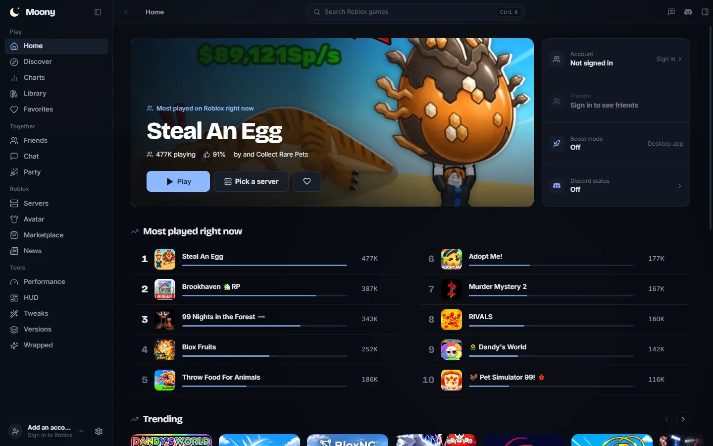

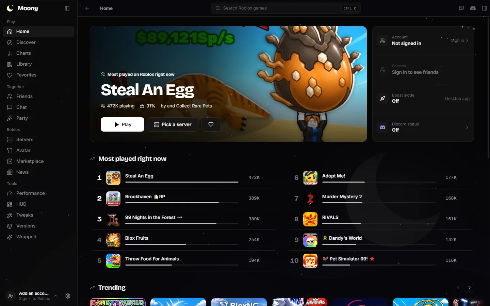

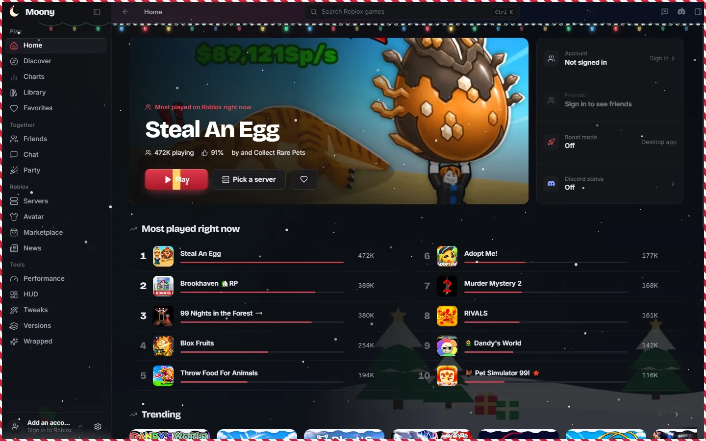

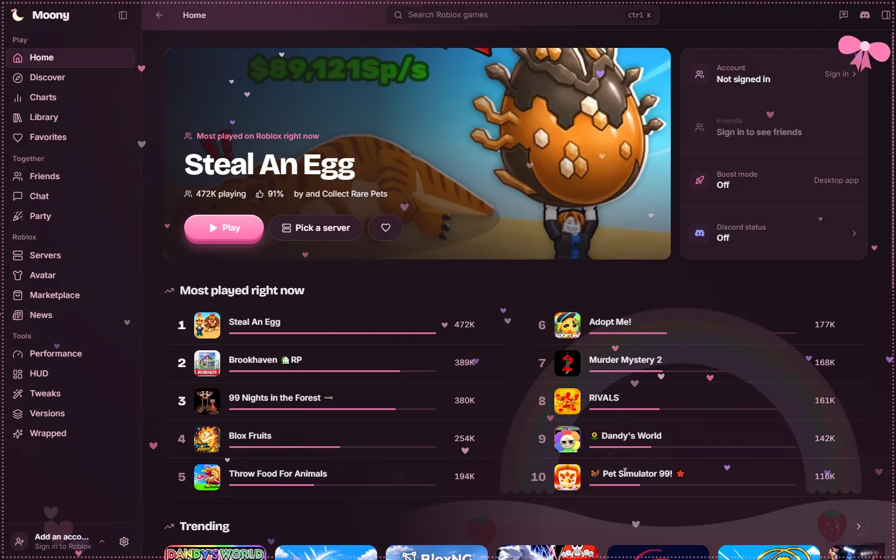

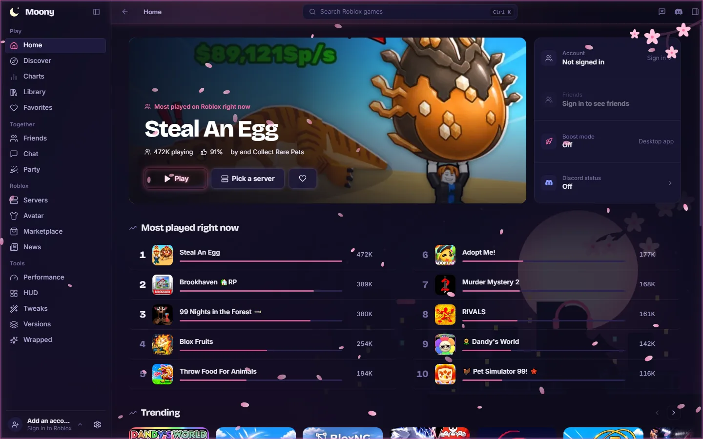

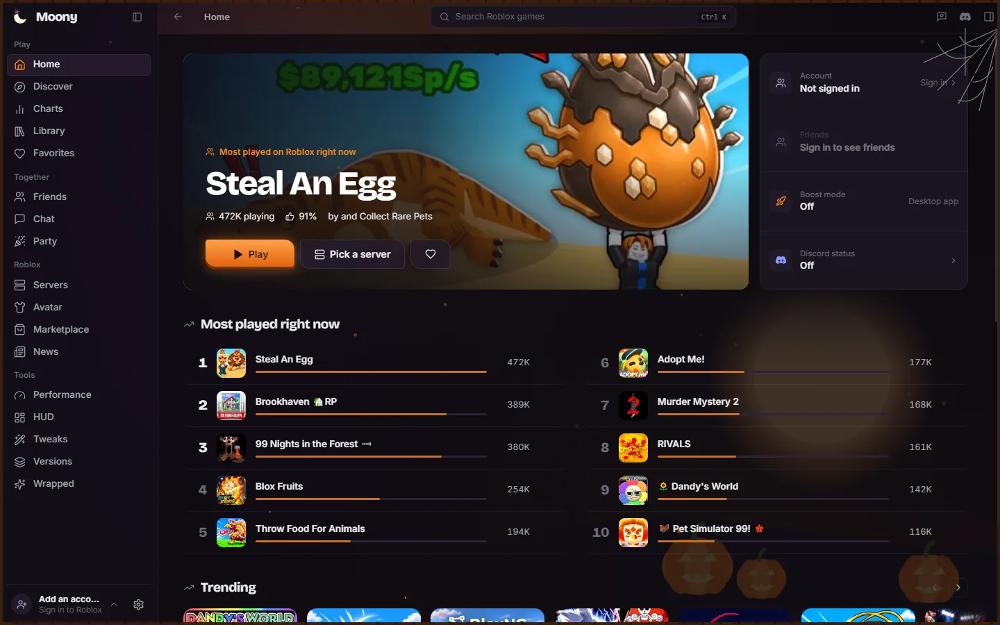

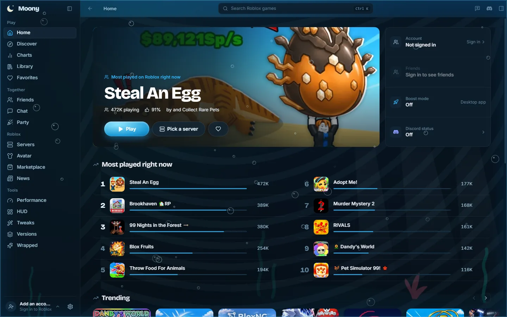

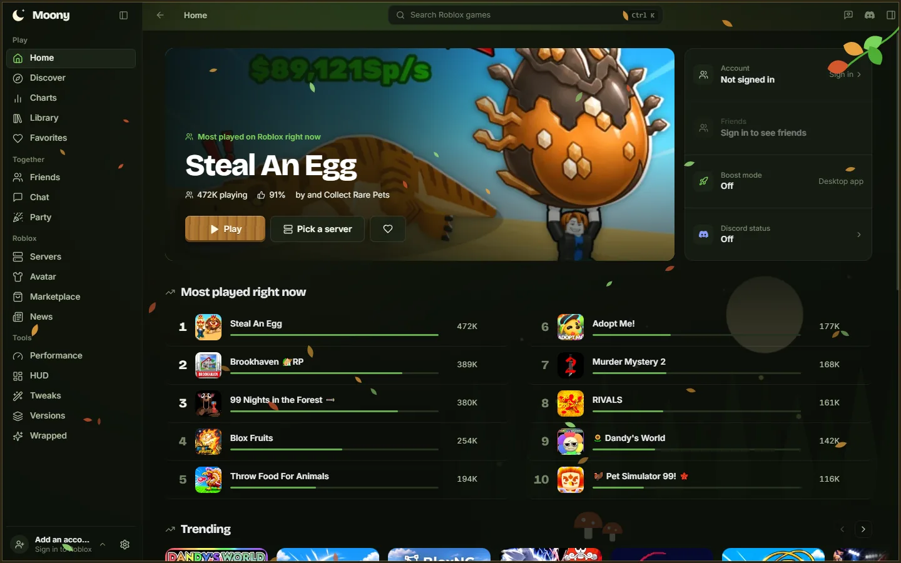

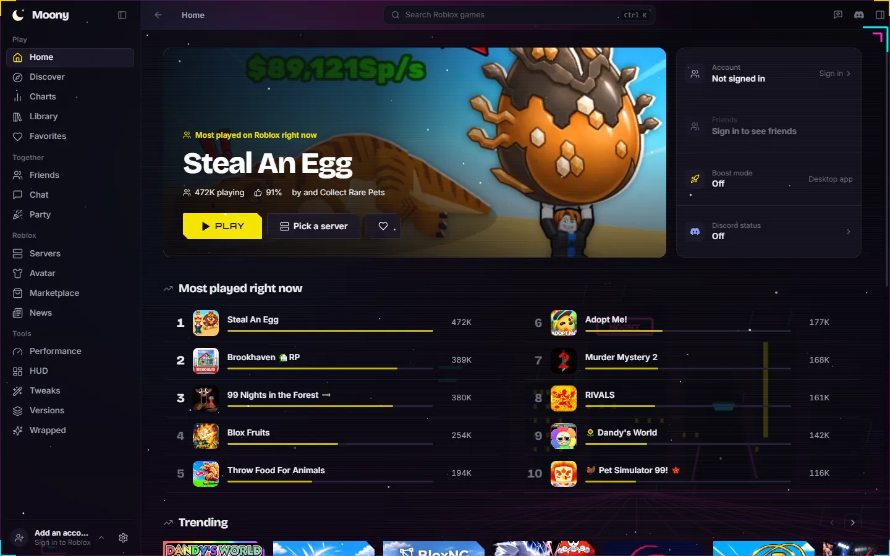

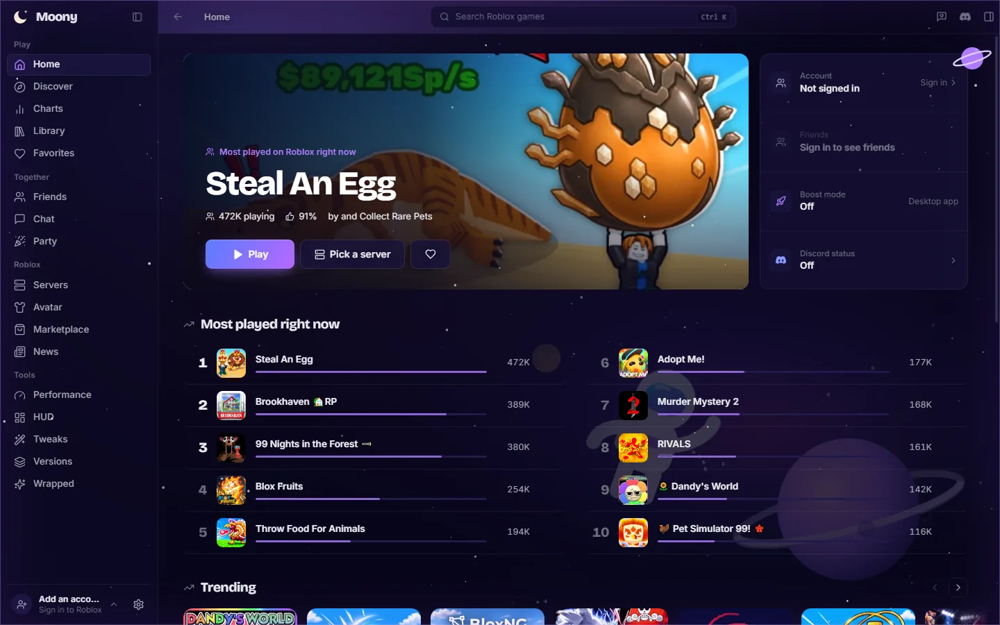

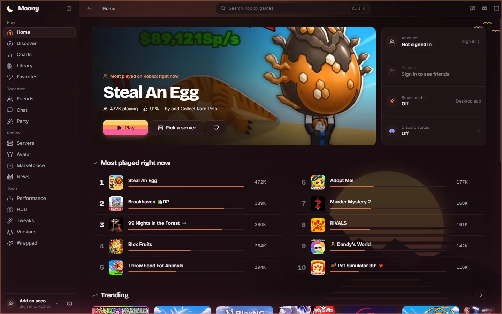

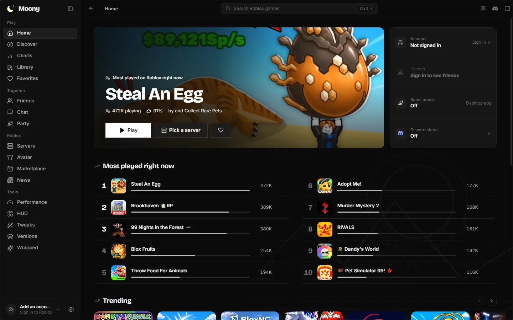
Make it even more yours
On top of any theme you can set your own picture, GIF or video background, an animated live background, the app font, the accent colour and the interface size. It's all in Settings → Appearance.
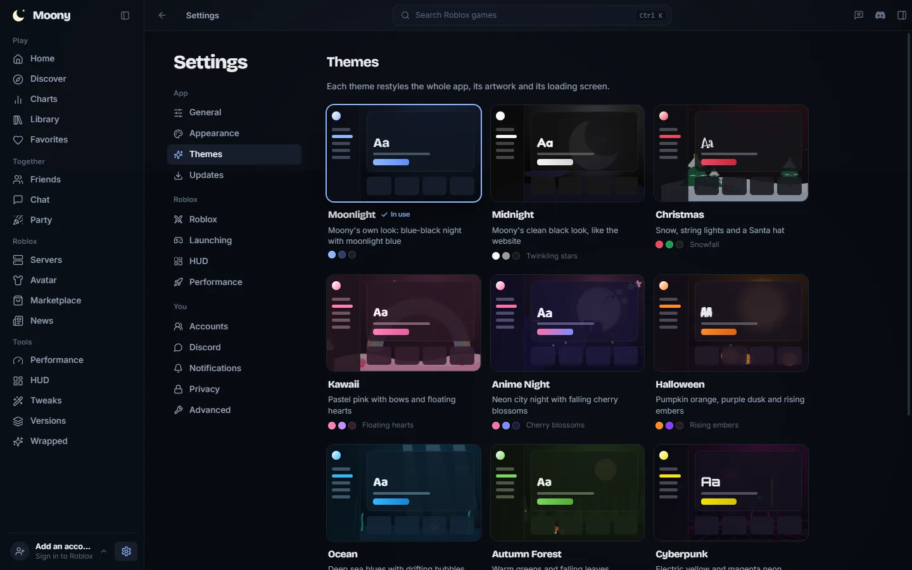